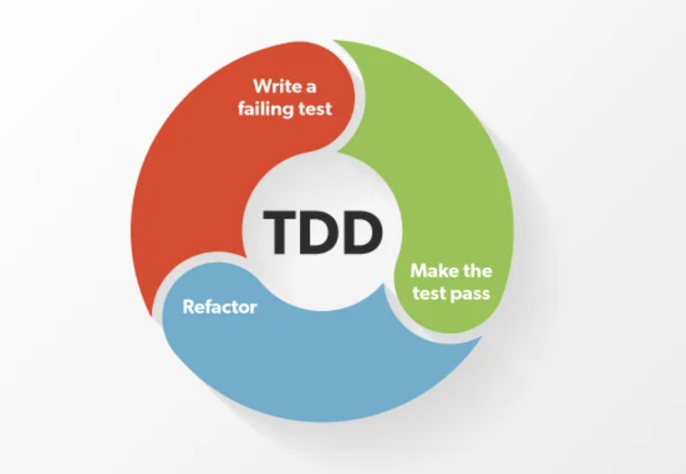

Kood luuakse testide kaudu, kus iga uus funktsionaalsus algab testi kirjutamisega.
Vigade vähendamine, kuna testid kirjutatakse enne koodi. Kood on hästi dokumenteeritud. Vigu on kiirem leida.
Testide kirjutamine võtab kaua aega, kuna tuleb kirjutada mitu korda. Algaja jaoks keeruline. Kõikke ei ole võimalik testida.
Cucumber:Cucumber on käitumisjuhtimise arenduse (Behavior-Driven Development, BDD) raamistik, mis võimaldab arendajatel kirjutada testjuhtumeid lihtsas ja inimloetavas keeles.
